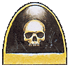
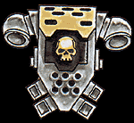

Imperial Forces |
Force Disposition Introduction |
Ork Forces |
|
The Mortificators are recruited from the feral world of Posul, a night world shrouded in almost perpetual darkness. The fierce nomadic tribes that inhabit this bleak world are locked in a state of constant warfare, fighting terrible battles and feasting on the flesh of the dead. A bloodthirsty caste of warrior monks rule the tribes and preach a culture of death worship. The monks of Posul teach that an enemy's strength can be harvested by the taking of his skull and eating of his flesh. Death in battle is the ideal of every warrior where he will be taken to the Halls of Victors to sit at the feast table of the Ultimate Warrior, a divine being who embodies the pinnacle of fighting prowess.
A tribe's standing is measured by the number of skulls it takes in battle and as such the mightiest tribes of Posul make ideal recruits for the Adpetus Astartes. Warriors picked from the strongest tribes are recruited by the Chaplains of the Mortifactors who were, themselves, once warrior monks amongst the tribesmen.
|
| ||||||||||||||||||||||||||||||||||||||||||||||||||||||||
|
 The halls of their fortress monastery which orbits Posul are adorned with the skeletons of their dead, their chapels paved with enemy skulls. The Chaplains preach that in death all brave warriors shall become one with the Emperor, the true Ultimate Warrior. Traditions learned over generations die hard and the Chapter's Chaplains continue the practices of their ancestors, slipping into death-like coma's on the eve of battle in order to divine the Emperor's will and advise their battle chieftain accordingly.  On the day of the Feast of the Emperor's Ascension (998.M41), the entire Chaplaincy of the Mortifcators fell into a deathly trance lasting seven days and seven nights. When they regained consciousness it was to deliver a chilling prophecy. The war on Armageddon against the Beast would be the Last Battle and all men who would be warriors were called upon to fight in it. Entrusting the care of their fortress monastery to serfs and servitors, the entire Mortifactors Chapter mobilised and began the journey to Armageddon. | |||||||||||||||||||||||||||||||||||||||||||||||||||||||||